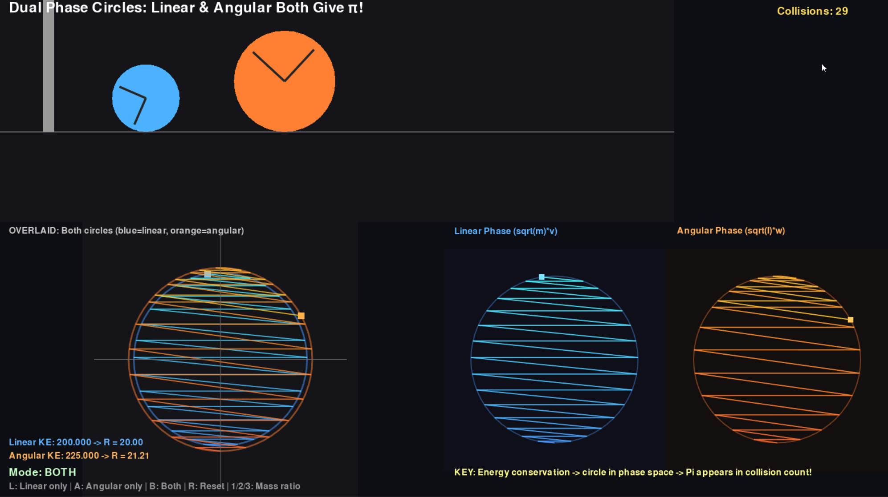
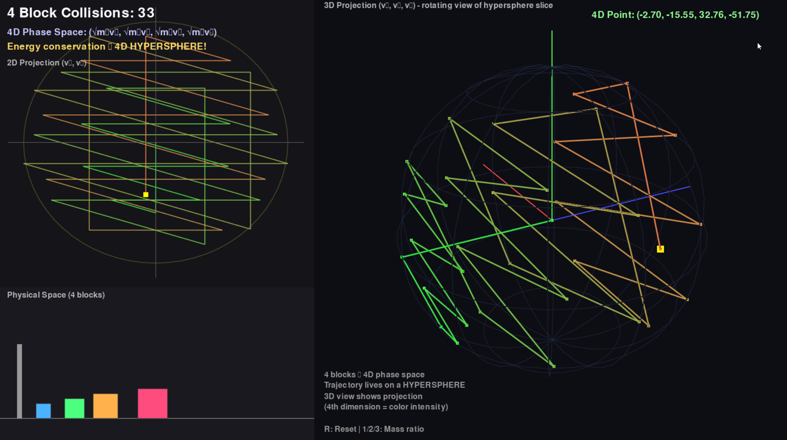
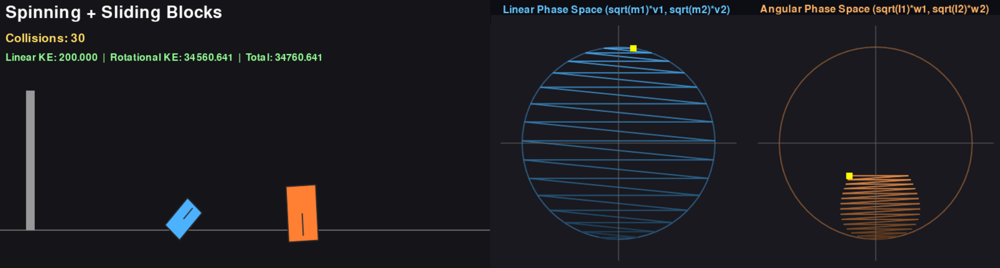
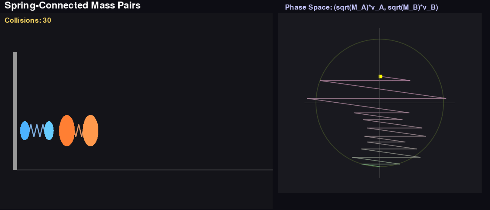

Mechanical Computing: π from Physical Systems
Exploring how continuous dynamics encode discrete numerical invariants
Beyond the Classic Construction
Building on 3Blue1Brown's famous collision-based construction of π—where elastic collisions between blocks with mass ratio 100^n produce the first n+1 digits of π—this project treats physical motion as a computational medium.
The question: how far can this idea be pushed? What other mechanical systems can encode π or other mathematical invariants? And what does this tell us about the relationship between continuous dynamics and discrete numerical structure?
Simulation Demonstration
2-Block System (less digits)
Additional visualization angles and collision counting. The circular arc in phase space becomes more apparent as the mass ratio increases.
2-Block System (more digits)
Standard two-block collision with phase space visualization. Watch how each collision in physical space corresponds to a reflection in velocity space.
3-Block 3D Phase Space
Three-block extension with full 3D phase space visualization. The trajectory now lives on a sphere, and reflections occur across planes rather than lines. This one requires more sophisticated way to connect the two quantities.
Phase Space Geometry: The Core Insight
Why Circles?
The key insight comes from viewing the system in phase space—a space where each axis represents a velocity. When you plot the velocities of both blocks (v₁, v₂), the system's trajectory draws a circle!
Each collision corresponds to a reflection across a line in this phase space. The mass ratio determines the angle of these reflection lines, and with mass ratio 100^n, the angle becomes arctan(√(100^n)) = arctan(10^n).
As n grows, this angle approaches 90°, and counting the reflections becomes equivalent to measuring the arc length of a quarter circle—which is π/2 radians. The discrete reflections approximate this continuous angle, giving us digits of π.
Conservation Laws and Rescaling
The circular trajectory emerges from two fundamental conservation laws:
- Energy Conservation: m₁v₁²/2 + m₂v₂²/2 = E (kinetic energy)
- Momentum Conservation: m₁v₁ + m₂v₂ = p (total momentum)
Why do we need rescaling? If we plot raw velocities (v₁, v₂), the energy equation forms an ellipse, not a circle:
m₁v₁²/2 + m₂v₂²/2 = E
(v₁²/a²) + (v₂²/b²) = 1 (ellipse with different axes)To make the geometry clean, we rescale coordinates by defining:
x = √m₁ · v₁
y = √m₂ · v₂Now the energy equation becomes a perfect circle:
E = m₁v₁²/2 + m₂v₂²/2
= (√m₁ · v₁)²/2 + (√m₂ · v₂)²/2
= x²/2 + y²/2
Therefore: x² + y² = 2E (circle with radius √(2E))The momentum constraint becomes a straight line in this rescaled space:
p = m₁v₁ + m₂v₂ = √m₁ · x + √m₂ · yThe Dead Zone: Physical Boundary
Not all points on the circle are physically accessible. There's a "dead zone" corresponding to states where the large block moves faster than the small block (v₂ > v₁).
Why is this impossible? Once v₂ > v₁, the blocks are separating and will never collide again - the large block is moving away from the wall faster than the small block can catch up. The system has "escaped" and no more collisions can occur.
In the rescaled coordinates, this boundary condition v₂ = v₁ becomes:
v₁ = v₂
√m₁ · v₁ = √m₂ · v₂
x = y · √(m₂/m₁)
For m₂/m₁ = 100ⁿ:
x = y · 10ⁿ (dead zone boundary line)This line has a steep slope (10ⁿ). On the circle, this corresponds to a thin slice near the top where the trajectory cannot enter. The accessible region is the arc from the positive x-axis (where both blocks move right initially) to just before this dead zone line.
// Accessible arc on circle (radius R = √(2E)):
From: (R, 0) → Both blocks moving, large block slower
To: x = y·10ⁿ → Blocks about to separate forever
Angular span ≈ π/2 - arctan(1/10ⁿ) ≈ π/2 (as n → ∞)Each collision reflects the point across a line at angle θ = arctan(√(m₂/m₁)). The number of reflections needed to traverse this arc is:
N = (accessible arc) / (angle per reflection)
≈ (π/2) / arctan(1/10ⁿ)
≈ π · 10ⁿThis is why we get digits of π! The dead zone creates the π/2 arc, and the reflection angle (determined by mass ratio) determines how many discrete steps are needed to cross it.
Linear vs Angular Momentum
Pure Angular: A Trivial Transformation
One might ask: does the phenomenon persist if we reformulate the system in terms of angular momentum instead of linear momentum? The answer is yes—but this is largely a trivial transformation.
Both formulations preserve the same circular phase-space geometry. The collision dynamics produce equivalent behavior up to reparameterization.
Combined Linear + Angular: More Interesting?
A more interesting variation: what if we have both linear and angular momentum in the same system? For example, spinning blocks that can also translate. This couples two types of dynamics and initially seems more complex.
However, the same rescaling trick applies. With appropriate coordinate transformations (scaling by √I for angular components, √m for linear), the combined energy conservation still yields a circular/spherical constraint in the rescaled space. The phase space geometry remains fundamentally the same.

Angular momentum formulation produces the same circular phase-space trajectory—the geometry is preserved under coordinate transformation.
Spinning + Sliding: Combined Dynamics
Blocks that both spin and slide—combining angular and linear momentum in a single system. After appropriate rescaling, the phase-space geometry remains circular.
The Rescaling Principle
This reveals a deeper pattern: many setups that seem interesting on paper collapse to the same phase-space geometry after proper rescaling.
The π-counting phenomenon emerges from:
- Quadratic energy conservation → circular/spherical phase space
- Linear momentum conservation → straight-line constraints
- Collision = reflection across constraint surface
Any system with these ingredients, regardless of whether the underlying variables are positions, velocities, angles, or angular velocities, will produce equivalent geometry in appropriately scaled coordinates. The "interesting" variations often reduce to cosmetic differences once you apply the right transformation.
Higher-Dimensional Extensions
Three-Body Systems: Spherical Phase Space
Generalizing to three interacting blocks introduces a higher-dimensional phase space. Circular trajectories become spherical—the trajectory now lives on a 2-sphere, and collisions are reflections across planes rather than lines.
While not conceptually novel, this serves as a robustness test: does the emergence of π persist under increased geometric and dynamical complexity?
3-Block 3D Phase Space
Three-block extension with full 3D phase space visualization. The trajectory lives on a sphere, with reflections across planes. Connecting collision count to π requires more sophisticated analysis in this higher-dimensional setting.
4D Phase Space: Hyperspherical Trajectories
Further extensions explore coupled linear–angular dynamics and 4D phase-space trajectories evolving on hyperspherical manifolds. These probe which geometric features are essential to the invariant—is it the circular/spherical geometry? The conservation laws? The reflection structure?
Four-Block System
Four-block extension: the phase space becomes 4-dimensional, with trajectories constrained to a 3-sphere. Visualization shows a projection of this higher-dimensional structure.
Multi-Block Complications
One complication in multi-block systems: beyond simply counting collisions, there are now non-trivial conversions between different collision types (block-block vs block-wall, different block pairs). Even after rescaling coordinates to transform the energy ellipsoid into a sphere, the collision geometry becomes more intricate.
This raises the question: does the clean π-counting property survive when the reflection structure itself becomes more complex? Initial exploration suggests the core phenomenon persists, but the analysis requires more care.
Mechanical Wave Dynamics
From Discrete Collisions to Continuous Waves
A complementary formulation replaces discrete collisions with mechanical wave dynamics. Instead of counting collision events, the same invariant emerges through continuous field propagation.
This connects the construction to familiar Fourier and spectral viewpoints, but realizes them through physical time evolution rather than algebraic decomposition.

Wave-based formulation: the same numerical invariant expressed through continuous propagation rather than discrete collision counting.
Exploring Other Phase Spaces
Beyond the clean cases above, we can ask: what other mechanical systems produce interesting phase-space structures? Not all of these yield π in an obvious way— some are just explorations of what different dynamics look like when projected into phase space.
Important caveat: unlike the original construction where π emerges directly from collision counting, many of these more exotic systems would require additional computation to extract numerical invariants—the elegance of "just count collisions" is lost. We're still exploring what works and what doesn't, both theoretically and in practice.
Spinning Rectangles: When Shape Matters
What happens with angular + linear momentum when collision geometry depends on the objects' shapes? Unlike point masses or circles, rectangles introduce orientation-dependent collision normals.
The phase-space trajectory is no longer exactly circular—this is expected, not a scaling issue. The exact collision geometry now matters, introducing deviations from the ideal circular/spherical structure that made the original construction so elegant.
Generalized Mechanical Systems
Various mechanical configurations and their phase-space representations. Note: proper normalization still needed for some of these visualizations.
Other Dynamical Systems
These examples step further from the collision-counting paradigm—they're included to show what phase-space trajectories look like for qualitatively different mechanical systems, not because they necessarily encode π.
Double Pendulum
Two Spheres in a Bowl
These systems have rich phase-space structure but lack the clean reflection geometry that makes collision counting meaningful. They're included as examples of the broader landscape of mechanical phase spaces.
On Elegance and Practicality
The original 3Blue1Brown construction is remarkable because π emerges from pure collision counting — no additional computation needed. Most generalizations sacrifice this elegance:
- Rescaling required: Even "equivalent" formulations need coordinate transforms to reveal the circular geometry
- Non-circular phase spaces: When shapes or collision geometry break symmetry, trajectories deviate from circles/spheres
- Extraction complexity: Getting "first few digits of π" from more exotic systems likely requires significant post-processing, not simple counting
This ongoing exploration is as much about understanding what doesn't work as what does—mapping the boundaries of where mechanical computation remains elegant.
Mathematical Details
The Collision Formula
For elastic collision between blocks with masses m₁ and m₂:
v₁' = ((m₁ - m₂)v₁ + 2m₂v₂) / (m₁ + m₂)
v₂' = ((m₂ - m₁)v₂ + 2m₁v₁) / (m₁ + m₂)Phase Space Transform
By scaling velocities as x = √m₁·v₁ and y = √m₂·v₂, the energy equation becomes:
x² + y² = 2E (constant circle)Each collision reflects the velocity vector across a line at angle θ = arctan(√(m₂/m₁)).
Counting Collisions
With mass ratio m₂/m₁ = 100^n, the reflection angle approaches π/2, and the number of reflections to traverse a quarter circle approaches:
N ≈ (π/2) / arctan(1/10ⁿ) ≈ π · 10ⁿFuture Directions
Exotic Mechanical Encodings
Ongoing exploration asks how far mechanical computation can be pushed:
- Non-elastic interactions: What happens with friction or inelastic collisions?
- Curved geometries: Does π emerge on non-Euclidean surfaces?
- Quantum extensions: Wave function dynamics as mechanical computation
- Other invariants: Can e, √2, or other constants be mechanically encoded?